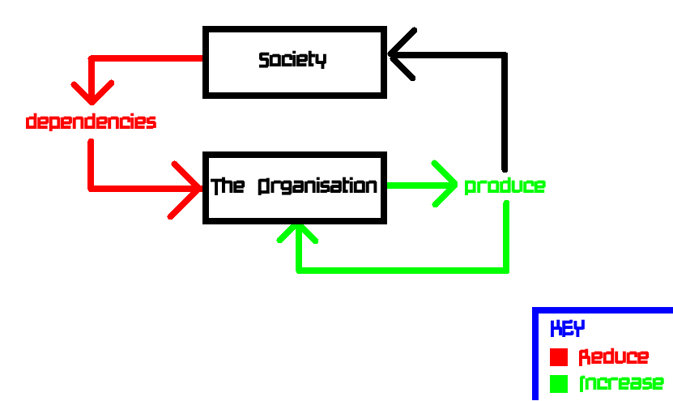

The Organisation
Business plan of The Organisation.
The Organisation has two main objectives.
In order of importance, these are:
1) To sustain a life of reasonable comfort within the organisation.
2) To reduce or minimise The Organisation's dependencies catered to by society.
Life is important for members within the organisation. A life without struggle or strife is extremely important, not just to The Organisation, but to most other people outside of it too.
Dependencies that are catered to by society, generally (can) include things such as: Money, Food, Utility Water Supply, Utility Electricity Supply, Utility Gas or Oil, Sanitary Items, Clothes and other Consumer Goods, which can support a adequate standard of living, or be excessive depending on the function within The Organisation.
Where removing a societal input eliminates a life of reasonable comfort for people within the organisation, the societal input should not be removed, and should remain in-place, until the dependency can be removed without effecting the quality of life for people within The Organisation.
In order to be able to reduce these organisational dependencies, catered for by society, a system known as bootstrapping can be used. Outputs from The Organisation, or produce, (both external and internal,) can be created in order to supplement and eventually eliminate the dependency. To put it another way, The Organisation should be able to cater for itself, ideally without external inputs.
This is the ultimate goal of The Organiation in it's current state: To be able to cater for it's own basic needs, without any external inputs or dependencies on the rest of society as a whole.
